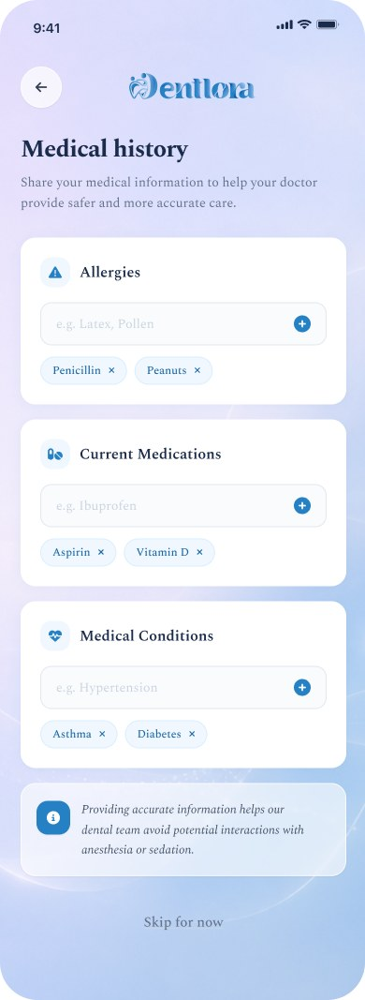
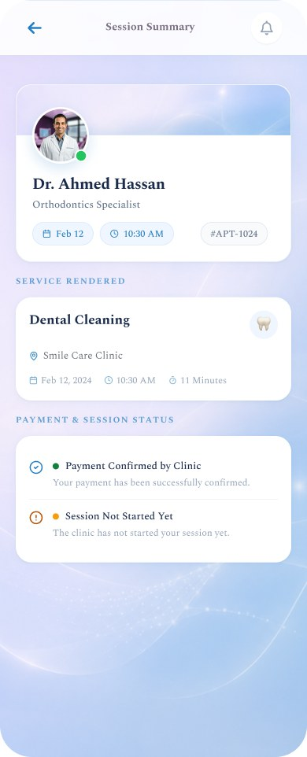

Case study · 01
Dentlora
A connected dental experience for practices, doctors, and patients.
A dental management ecosystem designed to simplify appointments, patient records, treatment workflows, and communication across devices.
- Practice Management
- Clinical Workflow
- Patient Experience

- Role
- Product Designer
- Scope
- UX/UI · Design System · UX Writing
- Platforms
- Web · iOS · Android
- Markets
- Canada · USA · Egypt
02 · Product ecosystem
One platform. Two experiences. One connected journey.

Dental professionals
Practice workspace
- Dashboard
- Patient Queue
- Treatment Notes
- Clinical Files
- Appointments

Patients
Personal dental record
- Appointments
- Medical Portfolio
- Prescriptions
- Treatment Plans
- Files
03 · The challenge
Dental care shouldn’t feel fragmented.
Dentists move between appointments, records, treatment notes and patient files, while patients often struggle to keep their dental history accessible in one place.



Records · Notes · Files · Patient history → one interface
04 · The connected journey
Designed as a workflow, not a collection of screens.
-
01

Patient books
Clinic, doctor and time, confirmed in the app.
-
02
Doctor prepares
Patient pre-brief with history and latest session.
-
03
Appointment begins
Session workspace opens with a live timer.
-
04
Treatment documented
Notes autosave, files sync to the dental file.
-
05
Patient record updated
Everything appears in the patient’s portfolio.
05 · Doctor experience
Designed around the dentist’s day.
The doctor experience brings appointments, patient context and clinical actions into one focused workspace.

01
Today’s Queue
Ready, in progress and pending patients at a glance, with quick actions for plans and templates.
02
Patient Pre-Brief
The last session summary, active plan progress and follow-up status, before the patient sits down.
03
Clinical Notes
A focused editor with a session timer. Notes autosave and lock to the appointment.
04
Media
X-rays and photos upload with auto-tags for date, treatment stage and patient.
05
Mark Complete
One action closes the stage and updates the queue, the record and the patient’s app.
06 · Patient mobile experience
Your dental history, always with you.

- Medical History
- Dental History
- Appointments
- Prescriptions
- Treatment Plans
- Follow-Ups
- Files
07 · Treatment journey
From appointment to treatment — without losing context.



01
Appointment
The patient sees the booked visit with its status: Ready, In Progress or Completed.
02
Patient Profile
The same record the doctor works from, in the patient’s pocket.
03
Treatment Notes
A readable summary of what was done, written once by the doctor.
04
Treatment Plan
Sessions, progress and cost in one plan the patient can follow and schedule.
05
Follow-Up
Symptoms reported from home reach the doctor’s pre-brief for the next visit.
08 · Design language
Calm by design. Clinical by purpose.
A restrained palette, a warm serif for reading, and soft surfaces that keep dense clinical information calm.
Primary
#2581C4
Navy
#0F2540
Ice
#DCEBF8
Lavender
#E9E6F7
Surface
#EEF3F9
White
#FFFFFF
Typography
Aa
Today’s Patient Appointments
Lora for headings and patient names, a humanist sans for controls and data.
Lora · 500 / 600Display
Inter · 400 / 500UI & body
Status chips
Form controls
Actions
Soft glass · used sparingly
Today’s Patient Appointments
Summary cards sit on a light atmospheric surface. Glass never exceeds a small share of any screen.
8
Today
2
Ready
1
In progress
Iconography · 1.5px line, rounded caps
Cards
16px radius, 1px hairline, one soft blue-tinted shadow. Elevation is reserved for the active patient and the session workspace.
09 · Real clinical constraints
Beautiful interfaces are only useful when the workflow works.
- 8h
- Secure sessions
- A full clinic day without re-login, then a clean expiry.
- 5
- Failed attempts → account lock
- Brute-force protection with a clear recovery path.
- 30s
- Autosave clinical notes
- Notes lock to the session. Nothing is lost mid-treatment.
- AR / EN
- Bilingual, RTL-ready
- Arabic and English switching for Egypt and the Gulf.
- X-ray · Photo · DICOM
- Patient media uploads
- Auto-tagged by date, stage and patient, synced to the dental file.
- ReadyIn ProgressCompleted
- Appointment status tracking
- One status vocabulary shared by doctor and patient.
10 · Responsive ecosystem
One system. Every touchpoint.

- Desktop · Practice
- Tablet · Chairside
- Mobile · Patient
11 · Dentlora
Dentlora
Making dental care easier to manage — and easier to experience.
- Product Design
- UX/UI
- UX Writing
- Design System
- Responsive Design
Dentlora · Product Design · Nisreen Abdelkader